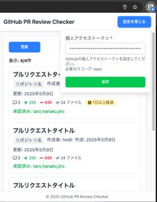

iimon TECH BLOG
https://tech.iimon.co.jp/
iimonエンジニアが得られた経験や知識を共有して世の中をイイモンにしていくためのブログです
フィード

React × Viteでコードレビュー効率化のためのChrome拡張機能を作った話
iimon TECH BLOG
はじめに こんにちは。 株式会社iimonでエンジニアをしている保田です。 今回は、自身がレビュワーに設定されているPRを一覧で確認することができるChrome拡張機能を開発したので、その内容についてお話ししたいと思います。 また、この拡張機能はGitHubでのPRレビューを効率化したいという思いがあり、業務では拡張機能の開発をしていますが、個人では開発したことがなかったので良い機会だと思い、成果物を Chrome Web Store に公開するところまで行いました。 エンジニアは日常業務において毎日のようにコードレビューを行なっていると思いますが、 以下のような課題があり、どうにか解決できな…
2日前
OpenID Connectとは？OAuth2.0との違いを解説
iimon TECH BLOG
こんにちは！ 株式会社iimonでエンジニアをしている遠藤です。 今まで「OAuth2.0は“認可”のためのプロトコル」と理解していたつもりでしたが、ソーシャルログインなど“認証”の文脈で登場すると、「あれ？認証もできるの？」とモヤモヤすることがよくありました。 これは、OAuth2.0の設計思想と、OAuth2.0をベースにした認証プロトコルの存在をきちんと理解していなかったからだと気づきました・・・。 ということで本記事では、オープン・スタンダードであるOpenID Connectについて、OAuth2.0と比較しながら整理します。 今回はそれぞれの役割や概念を整理し、OpenID Con…
4日前

Viteについてまとめました。
iimon TECH BLOG
はじめに Viteとは 結局、何のために使うの？ 実際にViteをつかってみる Vite+TypescriptでTodoList 従来のビルドツール(Webpackなど)の違い 開発ビルドと本番ビルドは何が違う？？ 開発ビルド(run dev) 本番ビルド(run build) 本番ビルドの必要性 軽くプロジェクトフォルダの構成 おわりに 参考 はじめに こんにちは！さいとーです。 皆さんはフロントエンドの開発で開発用ビルドと本番用ビルドを意識して開発していますか？？ 開発用ビルドと本番用ビルドはビルドツールによって違う方法でビルドされています。 自分は恥ずかしながら全く意識していなかったです…
25日前
LGTM！
iimon TECH BLOG
こんにちは まだ読んでいる最中ですが最近会社内の輪読会で読んでいる本の復習として記事をまとめさせていただきました！ 著者はAdrienne BraganzaさんでタイトルはLooks Good to Meです 2025年4月現在は翻訳されていない本になります。早く日本語版読みたいですね！ www.manning.com コードレビューの目的 まずはなぜ、コードレビューを行う必要があるのかを確認しましょう。 A code review is a process software developers use to inspect each other’s code, making sure it…
25日前
色について気になったので少し調べてみました
iimon TECH BLOG
お花見はしましたか？ 桜は毎年見ても飽きないですね。 一般的に、桜といえば、淡いピンク色が綺麗なソメイヨシノを思い浮かべる方も多いのではないでしょうか。 私の地元ではカンヒザクラという桜が主流で、ソメイヨシノと比べるとめっちゃ濃いピンクです。 同じ桜でもいろんな色の違いなども ウェブ上でも結構微妙な色の違いなものもあって、桜の花びらのように、微妙な調整もできますよね。 ちょい薄いピンク！とか濃ゆめと薄めのグラデーション、とか。 ウェブでそれを表現するのは主にCSSなどを使うと思うのですが、 その時って、#ffffffとか、rgb(0 0 0)など、ぱっと見ではわからない値で設定されています。 …
1ヶ月前
新規サービス開発を担当した振り返り
iimon TECH BLOG
■はじめに ■実装期間・開発人数・担当領域 ■新規開発する上で心がけたこと（やって良かったこと） ◆見積もりの粒度がちょうどよかった ◆「サービスの用途」や「ターゲット」を理解する ◆フローチャートを作成して、仕様の認識ズレを減らすように努めた ◆テストを書きながら小さく進められてこと ◆APIの作成やER図作成など体験できたこと ◆ドキュメントを整備できたこと ■今後に活かしたいこと ◆見積もりに抜けがあることを前提にする ◆簡単そうに見えて、意外と難しいこともある ◆追加の要望が来ることも見越しておく ◆新規サービス・新機能の説明会を開く ■まとめ ■はじめに こんにちは。 株式会社iim…
1ヶ月前
複数VPCのインターネット通信を1つのVPCに集約する構成をTerraformで書いてみた
iimon TECH BLOG
はじめに こんにちは、iimonでエンジニアをしているhogeです。 現在、弊社のワークロードで使っているVPCの数は多くありませんが、将来的にVPC数が増えた場合、NAT GatewayやVPC Endpointの費用が大きくなる可能性があります。そこで、Transit Gatewayを利用してインターネット通信を1つのVPCに集約する構成を検討し始めました。実際に導入するとなったときに素早く構築できるように、Terraformを使ってインターネット通信を集約する構成を一通り書いてみたので、今回はそれを紹介したいと思います。 インターネット通信を集約するとどれくらいコストを節約できるか まず…
1ヶ月前
jestでchrome extentionsのchrome storageのtestを書き方
iimon TECH BLOG
こんにちは。iimonでエンジニアをしているhayashiと申します。 普段は主に拡張機能を開発しております。 今回はchrome拡張機能のlocalStorageのmock化について解説していきたいと思います。 今まで書いたjestのブログ記事の知識を前提に進めて行きますので、まだの方は是非読んで頂ければ幸いです。 jest基礎とテスト戦略 目指せ！mockマスター！！！！！~jestのMockテストについて~ Jest Mockマスターへの道(番外編) グローバルオブジェクトのmock化 spyOnでの監視やmockテスト解説 chrome storageとは Google Chrome …
1ヶ月前
Docker基礎の基礎
iimon TECH BLOG
こんにちは。 ｉｉｍｏｎでエンジニアをしているかねにわです。 業務の中でバックエンド側プロジェクトを実行する際など、時折Dockerに触れることがあるのですが、門外漢も甚だしく、おざなりな内容理解に留まっている状態でした。 ここで、以下の書籍が大変分かりやすく参考になりましたので、自学を兼ねて、本書をベースにDocker基礎について記事の形でまとめさせていただきました。 Docker&仮想サーバー完全入門 目次 Dockerとコンテナ コンテナと仮想マシン コンテナを使うメリット コンテナの設計図であるコンテナイメージ コンテナのライフサイクル Dockerのアーキテクチャ Docker De…
1ヶ月前
型をもう少し自在に使える様になりたい
iimon TECH BLOG
はじめに こんにちは！木村です！ 普段TypeScriptを使用しているのですが、型の理解がまだまだだなと感じるこの頃です。 基本的な型を意識して実装することはあれど、発展した型の指定が難しいなと思うことが多いので、一度きちんと勉強しようと思い今回の記事を書きました！ よろしくお願いいたします！ 基本の型 number型 数値を扱う型。整数から浮動小数点数、負の値まで、あらゆる数値が分類されます。 NaN(Not a Number)やInfinityと言った特殊な値もnumber型に含まれます。 string型 テキストデータを表現するための型です。シングルクォート（’）、ダブルクォート（”）…
1ヶ月前
react 無限スクロールを作ってみた
iimon TECH BLOG
はじめに 無限スクロールとは react-windowとは react-window使ってみよ Profilerを使ってレンダリングの時間を計測してみた 最後に 参考文献 はじめに こんにちは、ｉｉｍｏｎ新卒エンジニアのみやこしです、最近業務でreactを使っている最中にAPIから配列のデータをfeatchして、それをテーブルに表示する際に大量のコンポーネントが作られ、パフォーマンスが悪くなりました。それを解決するために、色々探ったところ、無限スクロールというものを知り、それについて調べてみました！ 無限スクロールとは Slackのように画面のページの下部に近づくと自動的に新しいコンテンツを読…
2ヶ月前
弊社、アジャイル開発だったの！？〜アジャイル再入門〜
iimon TECH BLOG
こんにちは！ 株式会社iimonでEMをやっている松田です。 最近、なんとなく弊社の求人内容を見る機会がありました。（強引な導入やな） 下記がその求人内容です。 仕事内容 プロジェクトマネージャーとして、「速いもんシリーズ」の新規プロダクト開発 や、既存プロダクトの開発スケジュールの調整から開発要件とりまとめ、テ ストなど幅広く携わっていただきながら、テクノロジーで不動産業界の日常 を変化させるサービスを開発していただきます。 手法としては、アジャイル開発を利用し、市場やニーズに柔軟に対応して います。 ん？？？ 「アジャイル開発を利用し」・・・だって？？？ほんとにそんなこと言い切って大丈夫か…
2ヶ月前
Plasmo Frameworkにご挨拶してきた件について
iimon TECH BLOG
はじめに Let's play！ ちなみに まとめ さいごに こんにちは！ 株式会社ｉｉｍｏｎに所属しているエンジニアのひがです！ これまで業務でWebフレームワークやライブラリに触る機会は多かったのですが、ふとした瞬間に「ブラウザ拡張機能開発のFWってどんなものがあるのだろうか？」と疑問に思い、この機に調べて実際に使ってみました🙌 是非みていっていただけると嬉しいです！ はじめに 今回はPlasmo Frameworkというブラウザ拡張機能専用のFWで遊んでみます！ 公式トップ: https://www.plasmo.com/ ドキュメント: https://docs.plasmo.com/…
2ヶ月前
Jestについて調べて見ました！
iimon TECH BLOG
はじめに！ 基本構文 マッチャー関数について！ モック関数について 参考 はじめに！ iimonでエンジニアをしています。奥島です 今回、プロジェクトで Jest を使ってテストを書く機会がありましたが、基本的な実装方法について曖昧な部分があり。復習を兼ねて Jest の基本を整理しました。 基本構文 基本的な3つのメソッドdescribe(ディスクライブ), test, expect(エクスペクト) 1.describeについて describe関数で、テストのグループ化する事が整理されて見やすくなります。 - 第一引数 : テストブロックの説明（テスト対象メソッドなどを記載）書きます。 -…
2ヶ月前
TypeScript(GitHubのwiki)のパフォーマンスに関する内容を読んでみた
iimon TECH BLOG
こんにちは！ 株式会社iimonでエンジニアをやっているあめくです！ 最近TypeScriptを触る機会が増え、まだまだ勉強中ですが日々切磋琢磨しながら頑張っています！💪 今回はTypeScriptのWikiに記載されてるパフォーマンスに関する内容を読んで コンパイルしやすいコード の書き方について学んでみました！ 参考URL: https://github.com/microsoft/TypeScript/wiki/Performance ※ 注意点 - プロジェクトやチームごとにコーディングルールが異なるため、あくまで参考としてご覧ください。 - 今回取り上げるのは 「コンパイル時のパフォ…
2ヶ月前
【Chrome履歴】アクセス回数が多いサイトを調査した
iimon TECH BLOG
はじめに 訪問回数が多いサイト調べる データベースの接続 使用するテーブル 実装 実行結果 SQLクエリの説明 サイトを要約する Google Gemini APIを使う準備 実装 実行結果 さいごに 参考 はじめに はじめまして、3月まで新卒エンジニアのカトウです⛄️🌸 【この記事でやること】 何度も訪問しているWebサイトを調べて、内容を要約する Google Chromeの検索履歴データベースを使用して、アクセス回数の多いサイトを調べる Google Gemini APIを使用して、サイトの内容を要約する 【きっかけ】 入社して1年、何度も同じ検索クエリを打ち込み、何度も同じWebページ…
2ヶ月前
優秀なエンジニアは何が違う？
iimon TECH BLOG
はじめに エンジニアの間で話題の2冊：概要と魅力 1. 『プログラマー脳』 2. 『世界一流のエンジニアの思考法』 レビューや実装が早い理由：優秀なエンジニアの「考え方」 1. 認知負荷を減らす：短期記憶とワーキングメモリの活用 短期記憶の限界 ワーキングメモリの活用 2. 長期記憶の重要性：エンジニアの「知識の基盤」 長期記憶の鍛え方 1. 繰り返し学習 2. 関連付け 3. アクティブリコール 4. 十分な休息と睡眠 コードを効率的に読むための具体的な方法 1. 手を動かす前に頭を使う 2. 感覚ではなくファクトに基づく判断 効率的な仕事術：2冊に共通するポイント 1. 無駄を省いて集中力…
2ヶ月前
Slack APIとGASで朝会の抽選コマンドを実装してみた
iimon TECH BLOG
はじめに とりあえず作ってみた 使うもの 1. Slack Appの設定 1.1. アプリの作成 1.2. 設定を控える 1.3. botの表示名を設定する 1.4. OAuthの設定 2. Spreadsheetの作成 3. GASの作成 3.1. GASへ記載するコード 3.2. コードの解説 3.3. Slackへの投稿部分の補足 3.4. Webアプリとして公開 4. スラッシュコマンドの適用 5. いざスラッシュコマンドを実行！ 6. まとめ 参考文献 はじめに えー、、気がつけば入社から一年が経過してました。 社歴としては2年生、そしてつい先日1.5成人を迎えました、まつむらです。…
3ヶ月前
Three.jsを使って部屋のレイアウトを決めたい
iimon TECH BLOG
こんにちは。 株式会社iimonでエンジニアをしている遠藤です。 つい最近年が明けたな〜なんて思っていたら、あっという間にもうすぐ3月になりますね。 3月といえば、新生活に向けて引越しをされる方も多いのではないのでしょうか。 ということで、今回は引越しにちなんで(?)Three.jsで試しに簡単なお部屋を作ってみました。 Three.jsとは 手軽にWebページ上に3Dコンテンツを表示するJavaScriptのライブラリです。 環境構築 普段業務でReactを使用しているので、今回はreact-three-fiberを使用してReactで実装していきます。 (Node.jsをインストール済みの…
3ヶ月前
二分探索木ってなあに
iimon TECH BLOG
はじめに 二分探索木とはなにか グラフ構造 木構造とは 二分探索木とは 二分探索木をjavascriptで擬似的に作ってみる Node クラス BinarySearchTree クラス まとめ 参考 はじめに エンジニアの齋藤です。基本情報技術者試験の勉強をしていて 科目AにもBにも二分探索木というものがでてきて詳しく知りたいと思ったのでまとめてみました。 二分探索木とはなにか データ構造の1つでグラフの木構造を利用しています …これだけではいまいち意味がわからないので1つ1つ単語ごとにまとめます グラフ構造 データをノード（頂点）とエッジ（辺）の集合で表したデータ構造です。 ノードがいくつか…
3ヶ月前
Githubの成果物を集計してみる
iimon TECH BLOG
iimonでエンジニアをしています。腰丸です。 iimonの開発では、最近で見積もりや実装工数を記録するようにしていて、 普段は、見積もりスケジュールと照らし合わせて、実装ペースやスケジュール感を把握しています。 感覚的に、「ペース的にうまくいってないかも」とか、「この内容でこの内容のコードなら結構頑張ったかも」みたいな気持ちは持ちながら開発していますが、 成果物の内容を集計、可視化することで、より正確に振り返りや改善点を見つけることができるのではないかと思いました。 弊社では、Githubを使ってコードの管理をしているので、Githubの内容を集計することで、成果物の振り返りができればいいな…
3ヶ月前
GitHub Actionsでプルリクの確認漏れを防ぐ！
iimon TECH BLOG
みなさんこんにちは。 コードレビューにおいて、プルリク（以下、PR）の確認が遅れたり見落としたりして困ったことはありませんか？ 通知が埋もれてしまったり、後回しにして結局忘れてしまったりなど、 理由は様々ですが、PRの確認が遅れるとリリースまでのスピードが低下する可能性があります。 社内では朝会前後や就業前など、時間を決めてやるように取り組んでいますが 私自身、たまに漏れてしまうことがある状態です。 今回は、こうした確認漏れを防げるような仕組みを作れればと思っています！ 弊社のPRの考え方について PRの出し方 背景を記載する レビュワーはさまざまなタスクに関わっているため、PRだけでは意図を…
3ヶ月前
FirestoreでCRUDを体験してみる
iimon TECH BLOG
■はじめに ■Firestoreとは？ ■Firestoreのデータ構造 ■Firebaseプロジェクトを作成する ■Firebase SDKの追加 ■FirebaseSDKのセットアップ ■Firestoreデータベースを作成する ■TODOアプリでFirestoreに触れてみる ◆環境構築 ◆Firestoreへのデータ追加 ◆Firestoreのデータ更新 ◆Firestoreのデータ削除 ◆Firestoreのデータ一覧取得とリアルタイムアップデート ■Firestore無料枠 ■まとめ ■はじめに こんにちは。 株式会社iimonでフロントエンドを担当している白水です。 普段、フロン…
3ヶ月前
GitHub Actionsでリリースミスを防ぐ！自動化ワークフローの超初級解説
iimon TECH BLOG
こんにちは！株式会社ｉｉｍｏｎでエンジニアをしている「まるお」です。 先日、拡張機能アプリの最新版をリリースする際に、manifest.jsonのバージョンを更新する前にタグを誤って先にプッシュしてしまいました。こうしたミスを防ぐために、リリース作業を少しずつ自動化していけたらと思い、GitHub Actionsのワークフローの書き方を一から学びました。 今回の最終的な目標は、 リモートリポジトリのmanifest.jsonとタグのバージョンを比較して、異なる場合はタグをプッシュできないようにするワークフローを作成する ことです！ GitHub Actionsを初めて触る方にお役に立つ記事にな…
4ヶ月前
ヘッドレスCMS「Newt」でブログを導入してみた
iimon TECH BLOG
こんちには！ 株式会社iimonでエンジニアをしている保田です。 今回は、ブログやメモなどを自分の見やすいデザインで管理できる場所を作成したいと思い、NewtというヘッドレスCMSを使用してみました。 その簡単な実装例とともに、Newtの特徴を紹介したいと思います。 ヘッドレスCMSとは まず、ヘッドレスCMSはバックエンドとフロントエンドを分離して運用できる便利なツールです。 一般的なCMSでは、コンテンツの作成や管理と同時に、そのコンテンツを表示するためのデザイン（ビュー）も含まれています。代表的なCMSには、WordPress、はてなブログ、Qiitaなどがあります。 ヘッドレスCMSは…
4ヶ月前
【JavaScript】thisを理解する
iimon TECH BLOG
thisの指す内容は関数がどのように呼ばれたかで決まる メソッドとして呼ばれた場合 関数として呼ばれた場合 アロー関数として呼ばれた場合 thisを特定の値で指定する applyによるthisの束縛 callメソッドによるthisの束縛 bindによるthisの束縛 まとめ 参考文献・記事 こんにちは！ ｉｉｍｏｎのかねにわです。 クラスやメソッドを記述する際、thisを使ってプロパティ指定等をすることが多々ありますが、 具体的な挙動や意味をあまり理解できていませんでした。 過去に技術書でthisの項目を流し読みした際にも呼び出し方で参照先が変わる云々の記述があったのは覚えているのですが、 体…
4ヶ月前
chrome extensionのsendMessageを動かしてみた
iimon TECH BLOG
はじめに こんにちは。木暮です。 今回はchromeExtensionのruntime.sendMessageについて解説させていただきます。 普段はcontent_script側の実装がメインでService Workerを用いた実装はあまり経験がありませんでした。 業務の中で別タブの情報を取得したいケースがあり、Service Workerを介して別タブに情報を取得しに行く処理を実装することができたので便利でしたので紹介させていただきます。 chromeExtensionの構造 本題に入る前にまず、簡単にcontent_scriptとservice workerがそれぞれどういった役割を担…
4ヶ月前
React/useTransitionを使ってみる
iimon TECH BLOG
最近reactのhooksを勉強しました。実務でよく使うuseStateとuseEffect以外のhooksも勉強して「便利だな～～」と思いました。 今回はその中の一つ、「useTransition」について復習がてらまとめてみました。よろしくお願いいたします。まず、普通にタブのコンポーネントを実装します。このうち、タブ２はわざと非常に重い処理で表示までに時間がかかるようなものにしています。 import { memo, useState } from "react"; import styles from "./Content1.module.css"; const tabTitles = …
4ヶ月前
figmaプラグインを作ってみた（棒グラフジェネレータ）
iimon TECH BLOG
最近figmaで簡単なグラフを作りたくてプラグインを探していたのですが、 そういえばプラグインってどうやって作れるんだろう？とふと思い調べてみたところ、 プラグイン自体は比較的手軽に作れるようだったので試してみることにしました！ figmaプラグインとは Plugins are programs or applications created by the Community that extend the functionality of Figma's editors. Plugins run in files and perform one or more actions. Users …
4ヶ月前
React・Node.js・CloudflareWorkersでRustから作成したWASMを動かす
iimon TECH BLOG
こんにちは！iimonでCTOをしているもりごです。 本記事はiimon Advent Calendar 2024最終日の記事となります！ 今年はふるさと納税で沖縄に沢山寄付をしたので、沖縄の名産品を食べるのが毎日の楽しみとなっています。 今回、フロントエンド・サーバーサイド・エッジコンピューティングの3つの環境でWASM（WebAssembly）を活用し、同じ処理を別の環境で動かす方法を試してみました。複数の環境で共通の処理を使う事ができれば、同じコードを複数の環境に記述する必要がなくなり、管理の煩雑さを軽減できると考えて試してみました。 例えばフォームのバリデーションのように、フロントエン…
5ヶ月前